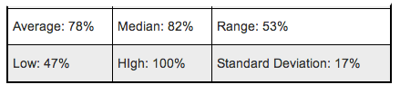

2.6.2 Stats View
From the Stats and Graphs view, on the right side of the window there is a table displaying all of the different statistics from the assignment. Figure 2.6.2 A shows what the table looks like.

Figure 2.6.2 A: Stats Table Example.
From this table, the grader can view important statistics about the assignment/quiz/test. The different statistics displayed in the table are: 'Average', 'Median', 'Range', 'Low Score', 'High Score', and 'Standard Deviation'.
Prev: Graph View
| Next: Adjust Curve
| Up: Stats and Graph View
| Top: index